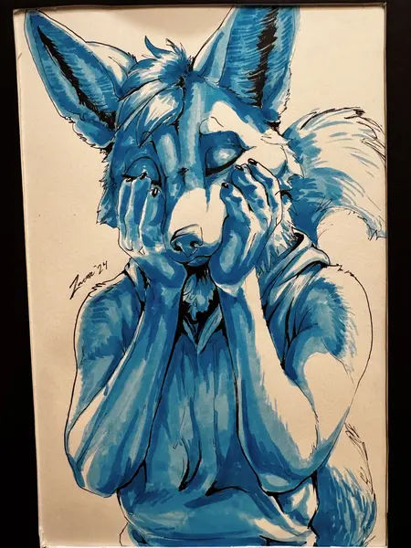
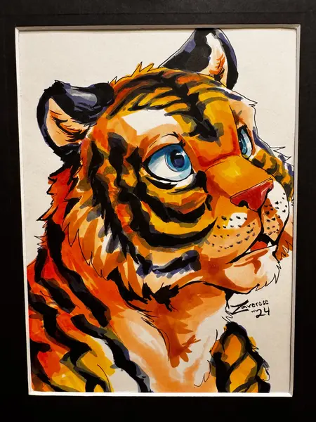
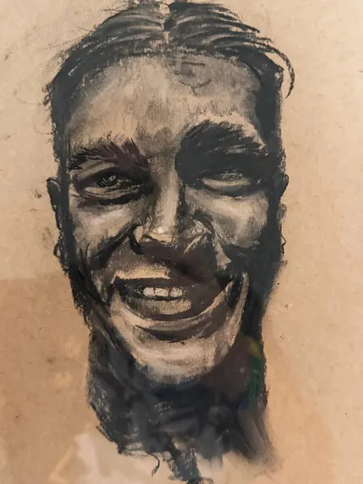
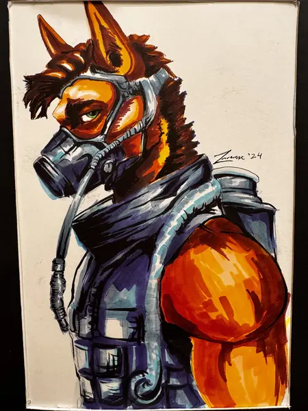
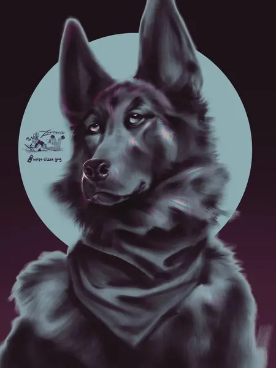
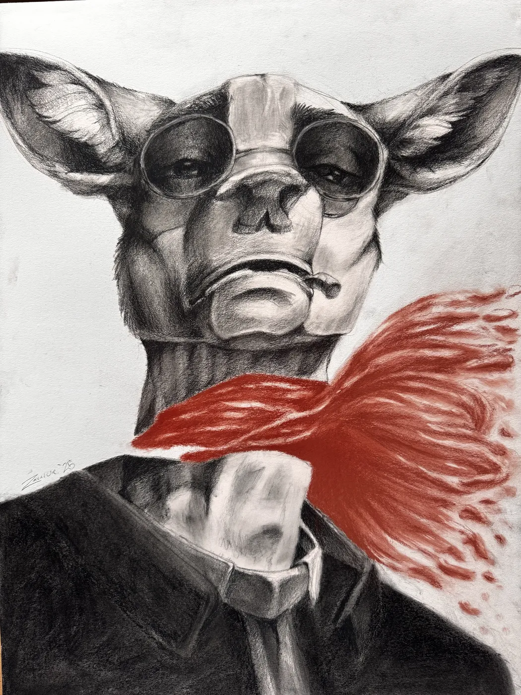

I — Weddings
For the bride, the family, and every table.
Cocktail hour becomes the part of the night everyone talks about. Your guests take home a portrait of themselves dressed for your day, a far more personal favour than any trinket.
Live Fashion Portraits · By Matt & Jam
We bring the atelier to your celebration. Each guest sits for a few unhurried minutes and leaves with an original ink and watercolour portrait, a keepsake worth framing.
In the studioA portrait, from first stroke
Guests don’t simply receive a portrait. They watch it come to life, line by line, with a glass of champagne in hand. The drawing is the entertainment, the conversation starter, and the souvenir.
For every kind of occasion
I — Weddings
Cocktail hour becomes the part of the night everyone talks about. Your guests take home a portrait of themselves dressed for your day, a far more personal favour than any trinket.

II — Event Planners
Polished, punctual, and self-contained. We arrive styled to your palette, set up discreetly, and keep a steady line of delighted guests moving, from quinceañeras to bar and bat mitzvahs to galas.

III — Brands & Marketing
Branded portrait cards, product sketching, and live illustration that people photograph, post, and tag. It’s a hand-made moment your attendees carry out the door and onto their feeds.
A small manifesto
Stand out in a world of AI slop.Anyone can generate an image. Not everyone can have one made for them, by hand, in front of them, by an artist who noticed the way they laughed. That’s the luxury: real attention, rendered in real ink.
Selected work









How it unfolds
From the first note to the last portrait, every detail is considered, so the only thing you need to do is enjoy your evening.
Share your date, venue, and vision. We reply within two business days.
We choose your portrait style, paper, and palette, and design custom cards to match your stationery or brand.
We arrive early, set up an elegant station, and draw your guests live, one portrait at a time.
Each guest leaves with an original, sleeved and signed. You receive a digital archive of the evening.
“Our guests are still talking about it. Half of them have their portraits framed in their homes.”
Placeholder testimonial · Replace with a client quoteNow reserving the season
Dates fill months in advance, especially in wedding season. Tell us about your celebration and we’ll hold your date while we plan.